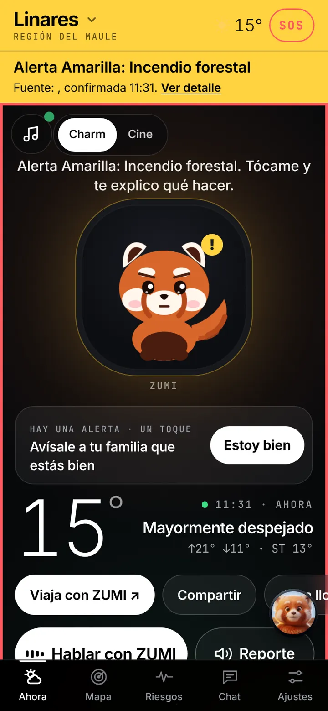
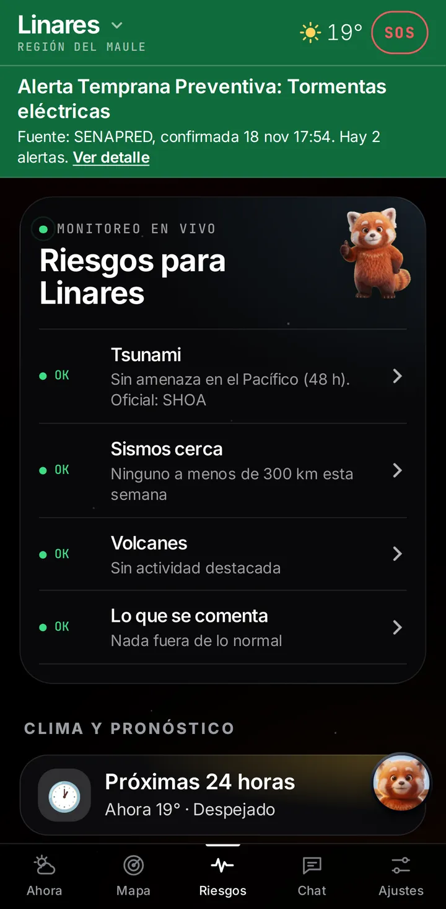
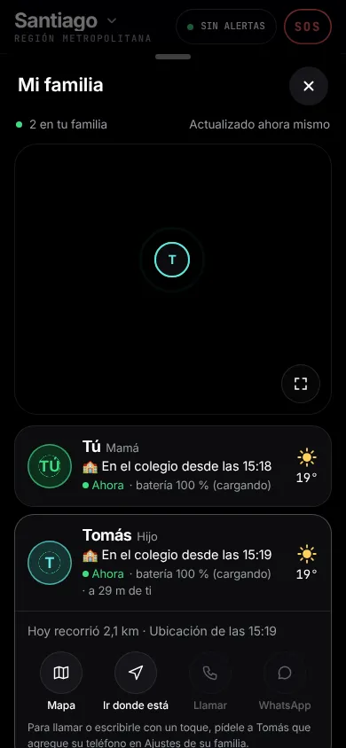
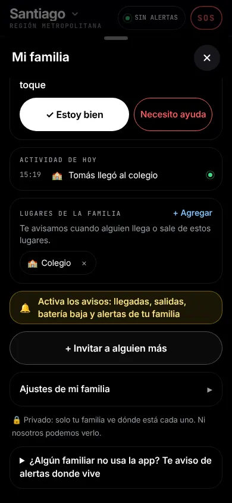
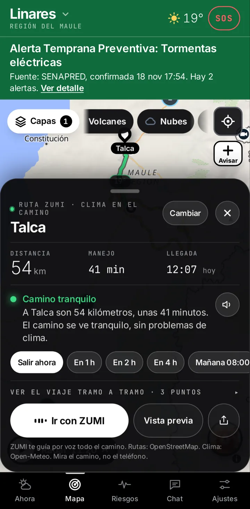
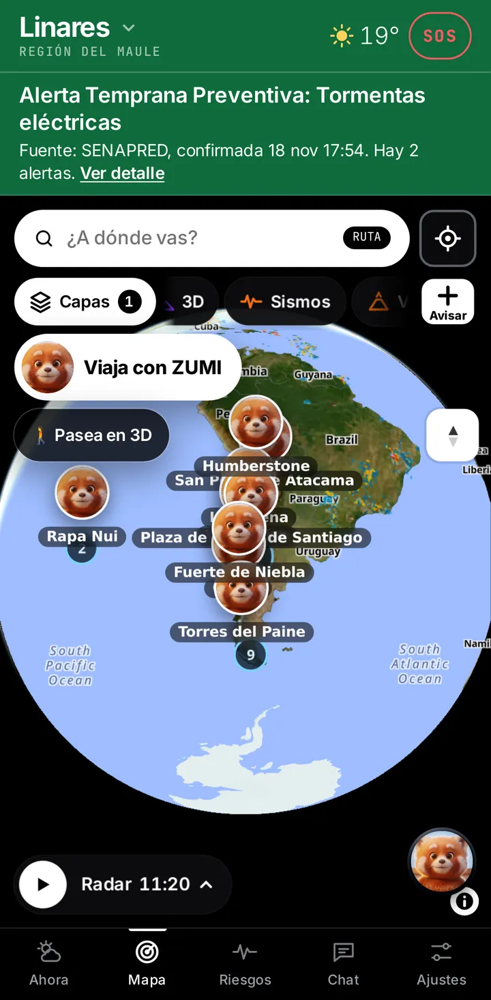
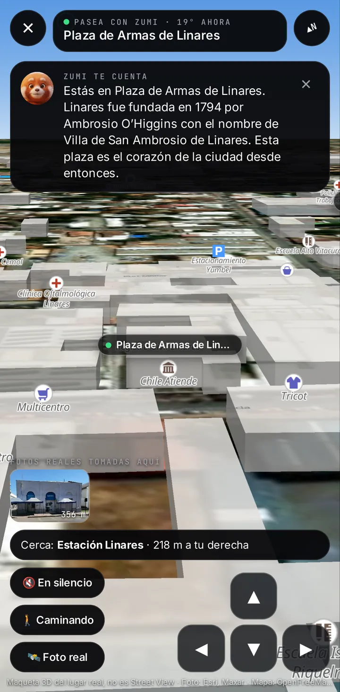
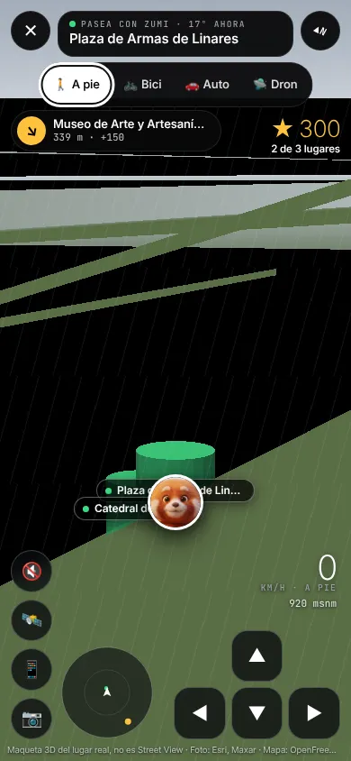

Gratis
Lo esencial para estar a salvo.
$0
Para siempre
- Alertas oficiales, sismos, tsunamis y SOS
- GPS familiar cifrado y «Estoy bien»
- Viajes guiados con clima en ruta
- 5 preguntas al día a ZUMI
- Avisos de 1 comuna
Alertas oficiales, el clima de tu comuna y tu familia en un mapa, contados por un panda rojo que habla claro. Funciona en el navegador de tu teléfono, sin descargar nada.
Sin cuenta para empezar. Lo que protege la vida es gratis, siempre.
Cada punto es una comuna que ZUMI vigila. Elige la tuya y recibes los avisos que te tocan a ti, no los de todo el país.
ZUMI no inventa alertas. Lee las fuentes oficiales y científicas, se queda con lo que afecta a tu comuna y te lo dice en palabras simples.
Una alerta de SENAPRED, un sismo, un boletín de tsunami o el pronóstico de lluvia por hora.
Cruza la alerta con los límites de tu comuna. Si no te afecta, no te molesta.
Qué pasa, qué tan grave es y qué hacer ahora. Si es grave, ocupa toda la pantalla.
Con un toque mandas «Estoy bien» o «Necesito ayuda» a los tuyos, con tu ubicación.
Abres ZUMI y ya sabes si sales con paraguas, con chaqueta o con bloqueador. ZUMI se viste según el clima y te cuenta lo importante.

Incendios, tormentas, sismos, tsunamis y volcanes en un solo lugar, con la fuente y la hora de cada aviso.
Si una fuente no responde, ZUMI te lo dice. Nunca muestra «todo tranquilo» sin datos.

Sabes dónde está cada uno y si está bien, en tres pasos: invitas por WhatsApp, aceptan, y listo. Hecho para que un abuelo lo use sin ayuda.


Escribe a dónde vas y ZUMI revisa la ruta tramo a tramo: lluvia, viento, niebla y alertas por donde vas a pasar, no solo donde llegas.

Gira el planeta, baja a tu barrio y mira cómo se mueve la lluvia. Todo lo que pasa, en capas que prendes y apagas.

Camina, pedalea, maneja o vuela en dron sobre calles reales. Alcanza faros en lugares con historia y ZUMI te cuenta qué pasó ahí.


ZUMI contesta por voz, como una llamada. Sabe del clima de tu comuna, de sismos, de qué hacer en una emergencia, y lo explica sin palabras difíciles.
Las respuestas las genera inteligencia artificial con datos de fuentes públicas. Ante una emergencia, sigue siempre las instrucciones de la autoridad.
Así acompaña ZUMI a una familia de Linares desde que se levanta hasta que se acuesta. Un ejemplo de lo que hace por ti sin que se lo pidas.
Antes de salir, ZUMI dice qué llevar.
Tomás llega al colegio. Su mamá recibe el aviso.
Viaje a Talca: ZUMI propone salir más tarde.
SENAPRED emite una alerta preventiva para la comuna.
Todos marcaron «Estoy bien». ZUMI se va a dormir.
ZUMI está hecha en Chile para cuidar a las personas, no para vender información sobre ellas.
Las alertas, el SOS, la familia y los viajes guiados son gratis en todos los planes. Los planes pagados suman preguntas a ZUMI, más comunas y más historial.
Durante el lanzamiento, todo está abierto. Hoy no cobramos nada. Estos son los precios que tendrán los planes cuando se activen, con 7 días de prueba gratis.
Lo esencial para estar a salvo.
$0
Para siempre
Tu amigo del clima, cuando quieras.
$3.990 al mes
o $34.990 al año
ZUMI+ para hasta 5 personas.
$5.990 al mes
o $49.990 al año
| Qué incluye | Gratis | ZUMI+ | Familia |
|---|---|---|---|
| Alertas oficiales, sismos, tsunamis y SOS | Sí | Sí | Sí |
| GPS familiar cifrado y «Estoy bien» | Sí | Sí | Sí |
| Viajes guiados con clima en ruta | Sí | Sí | Sí |
| Preguntas a ZUMI al día | 5 | 150 | 300 |
| Comunas con avisos | 1 | 5 | 10 |
| Personas con ZUMI+ | — | 1 | 5 |
| Historial | 7 días | 1 año | 1 año |
ZUMI funciona en el navegador. Si la agregas a tu pantalla de inicio se abre como cualquier app y te puede mandar avisos.
Usarla es gratis. Las alertas, el botón SOS, el GPS familiar y los viajes guiados son gratis siempre. Durante el lanzamiento todo lo demás también está abierto. Más adelante habrá planes ZUMI+ y Familia para quien quiera conversar más con ZUMI o seguir más comunas.
No. ZUMI toma las alertas oficiales y te las explica, pero la autoridad es SENAPRED, y para tsunamis, el SHOA. En una emergencia, sigue siempre sus instrucciones y llama al 131, 132 o 133 si lo necesitas.
Alertas de SENAPRED; sismos del Servicio Geológico de Estados Unidos (USGS); tsunamis del Centro de Alerta de Tsunamis del Pacífico; volcanes del Programa Global de Volcanismo, que cita a SERNAGEOMIN; clima de Open-Meteo; mapas de OpenStreetMap y Esri; fotos de la calle de Mapillary; y lugares de Wikipedia.
Solo las personas de tu familia que invitaste. La ubicación se cifra en tu teléfono antes de enviarse y la clave viaja en el enlace de invitación, así que ni siquiera nosotros podemos verla. Puedes dejar de compartir cuando quieras.
Sí, si aceptas las notificaciones. En iPhone primero tienes que agregar ZUMI a tu pantalla de inicio desde Safari; en Android funciona desde Chrome.
ZUMI cubre las 346 comunas de Chile, desde Arica hasta la Antártica, incluyendo Rapa Nui y Juan Fernández.
No. Eliges tu comuna y empiezas. Solo el chat de vecinos te pide entrar con Google, para que cada mensaje tenga un nombre detrás.
Un panda rojo animado que vive en la app. Cambia según el clima, te habla, te cuenta datos de tu ciudad y se pone serio cuando hay una alerta. Lo creó un equipo chileno.
Abre ZUMI, elige tu comuna e invita a tu familia. Toma menos de un minuto.